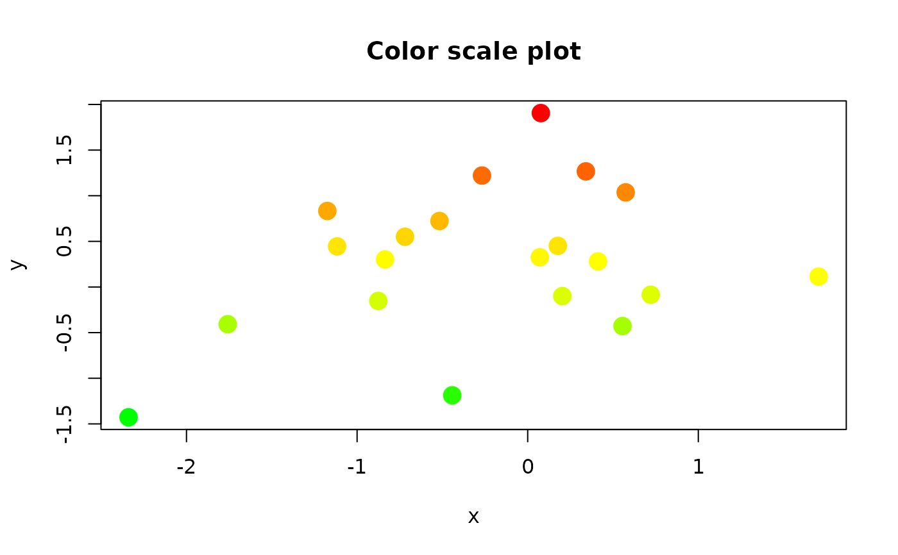
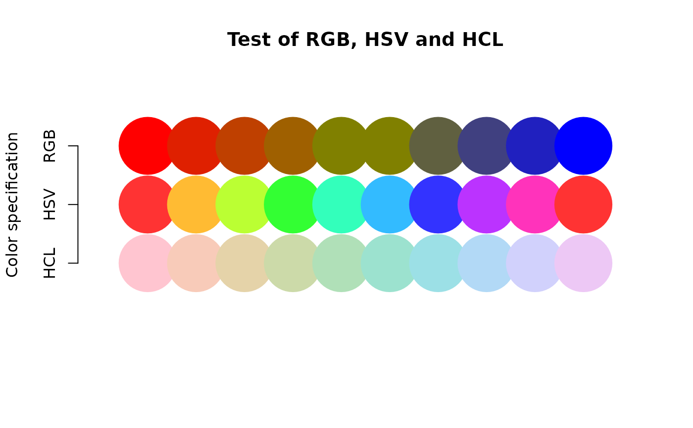

Turn values into colors.
color.scale.RdTransform numeric values into colors using RGB, HSV or HCL
Arguments
- x
a numeric vector, matrix or data frame
- cs1,cs2,cs3
color parameters for scaling x
- alpha
Value for transparency in colors. If more than one value is passed, the alpha values will be transformed like the colors.
- extremes
The colors for the extreme values of x (RGB only).
- na.color
The color to use for NA values of x.
- xrange
An explicit range to use in the transformation.
- color.spec
The color specification to use in the transformation. Anything other than "rgb", "hsv" or "hcl" will almost certainly fail.
Details
color.scale calculates a sequence of colors by a linear transformation of the numeric values supplied into the ranges for the three color parameters. If only one number is supplied for a color range, that color remains constant for all values of x. If more than two values are supplied, the x values will be split into equal ranges (one less than the number of colors) and the transformation carried out on each range. Values for a color range must be between 0 and 1 for the RGB or HSV specifications, and between 0 and 360 (cs1) and 0 to 100 (cs2 and cs3) for the HCL specifications.
IMPORTANT: If x has fewer values than the number of values in the color parameters, it will usually return incorrect colors. This is usually only a problem when using color.legend with a small number of rectangles in the legend as color.legend calls color.scale to calculate the color rectangles.
If extremes is not NA, the ranges will be calculated from its values using col2rgb, even if ranges are also supplied. extremes allows the user to just pass the extreme color values in any format that col2rgb will accept. Note that this forces the color specification to RGB.
If the user wants to specify a range of values with xrange, it must at least include the range of x values. This can be useful when there is a notional range like 0-100% that the values do not cover, or when several series of values with different ranges are to be assigned the same color scale.
The user may not want the color scheme to be continuous across some critical point, often zero. In this case, color.scale can be called separately for the values below and above zero. I may get around to adding an argument to do this in one shot. Until then, see the second example for color2D.matplot and also the diverge.hcl and diverge.hsv functions in the colorspace package.
When passing more than one alpha value, it will be transformed like the colors. This allows matrices with concentrations of high values to be overplotted to illustrate group locations and separations. See the iris example in color2D.matplot.
Note
The function is useful for highlighting a numeric dimension or adding an extra "dimension" to a plot.
There are quite a few R functions that transform numeric values into colors or produce colors that can be used to represent values. Two packages that might be of interest are RColorBrewer and colourschemes. See the last example for approximating other color scales with color.scale.
Examples
# go from green through yellow to red with no blue
x<-rnorm(20)
y<-rnorm(20)
# use y for the color scale
plot(x,y,col=color.scale(y,c(0,1,1),c(1,1,0),0),main="Color scale plot",
pch=16,cex=2)

plot(1:10,rep(1:3,length.out=10),axes=FALSE,type="n",xlim=c(0,11),ylim=c(0,4),
main="Test of RGB, HSV and HCL",xlab="",ylab="Color specification")
axis(2,at=1:3,labels=c("HCL","HSV","RGB"))
points(1:10,rep(1,10),pch=19,cex=8,col=color.scale(1:10,c(0,300),35,85,
color.spec="hcl"))
points(1:10,rep(2,10),pch=19,cex=8,col=color.scale(1:10,c(0,1),
0.8,1,color.spec="hsv"))
points(1:10,rep(3,10),pch=19,cex=8,col=color.scale(1:10,c(1,0.5,0),
c(0,0.5,0),c(0,0,1),color.spec="rgb"))

if (FALSE) { # \dontrun{
# requires viridisLite
library(viridisLite)
plot(0,xlim=c(-1,1),ylim=c(-1,1),type="n",axes=FALSE,
main="Approximating other color scales",xlab="",ylab="")
gradient.rect(-1,0.8,1,0.95,nslices=50,
col=color.scale(1:50,1,
c(0,0.3,0.6,0.8,1,1),
c(0,0,0,0,0,0,1)))
text(0,1,"color.scale")
gradient.rect(-1,0.65,1,0.8,col=heat.colors(50))
text(0,0.6,"heat.colors")
gradient.rect(-1,0.3,1,0.45,nslices=50,
col=color.scale(1:50,c(0,0.2,0.9,0.95,0.95),
c(0.7,0.8,0.9,0.7,0.95),
c(0.1,0,0,0.35,0.95)))
text(0,0.5,"color.scale")
gradient.rect(-1,0.15,1,0.3,col=terrain.colors(50))
text(0,0.1,"terrain.colors")
gradient.rect(-1,-0.2,1,-0.05,nslices=50,
col=color.scale(1:50,c(0.3,0,0.3,0.1,1,0.95,1),
c(0,0.3,0.9,1,1,0.85,0.85),
c(1,1,0.9,0.1,0,0.5,0.5)))
text(0,0,"color.scale")
gradient.rect(-1,-0.35,1,-0.2,col=topo.colors(50))
text(0,-0.4,"topo.colors")
gradient.rect(-1,-0.7,1,-0.55,nslices=50,
col=color.scale(1:50,c(0.3,0.2,0,0.4,0.95),
c(0.1,0.3,0.6,0.75,0.95),
c(0.3,0.6,0.5,0.4,0)))
text(0,-0.5,"color.scale")
gradient.rect(-1,-0.85,1,-0.7,col=viridis(50))
text(0,-0.9,"viridis")
} # }